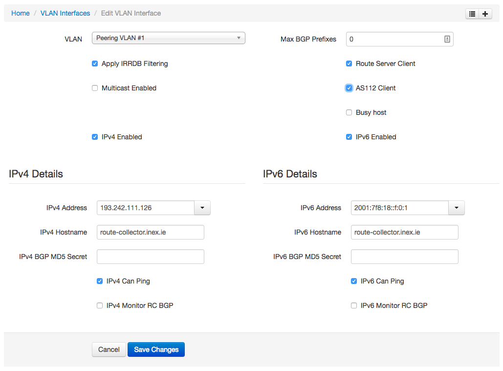

Route Collectors
Prerequisite Reading: Ensure you first familiarize yourself with the generic documentation on managing and generating router configurations here.
Route collectors are an important member setup, diagnostic and metric tool for IXPs. Route collectors accept all routes and advertise none. IXP Manager will generate route collector configuration for you. You can see an example of this generated configuration here.
At INEX we use the Bird BGP daemon as our collector using the stock configuration as generated by IXP Manager. We also use this same setup for the quarantine LAN collectors. You can see our live looking glasses here for more information.
Setting Up
You first need to add your route collector(s) to the IXP Manager routers database. See this page on how to do that.
Typically an IXP's route collector service will share the ASN of the IXP's own management network (but be different to the route server entry). You should also add the route collectors to your initial internal customer representing your IXP on to IXP Manager. Here's INEX's example from our peering LAN1 in Dublin:

Other Information
Quarantine
We also use a quarantine route collector when provisioning new member connections. This is a Bird BGP daemon running on a virtual machine on our quarantine LAN. For is, this quarantine LAN is:
- a separate dedicated VLAN on our peering switches;
- uses the same addressing as the production LAN;
- our quarantine route collector even has the same MAC as the production version.
When adding routers to IXP Manager, setting the quarantine flag means that the configuration will only contain interfaces that are on the quarantine VLAN.